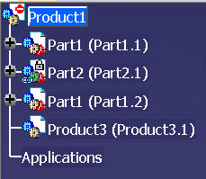
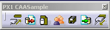
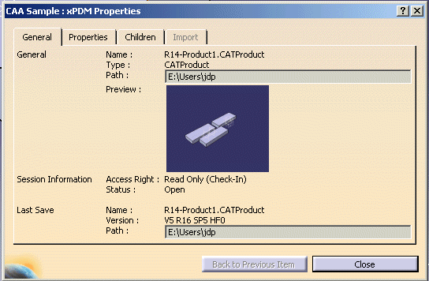
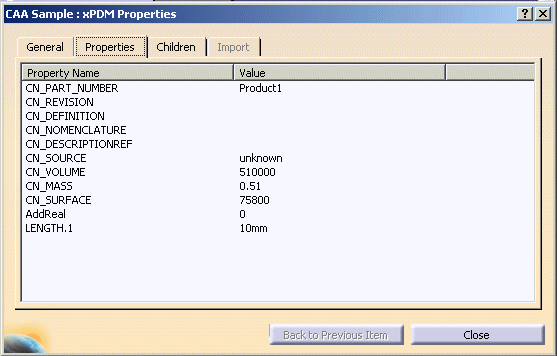
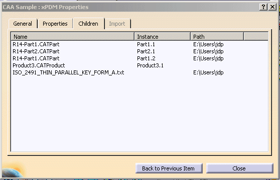
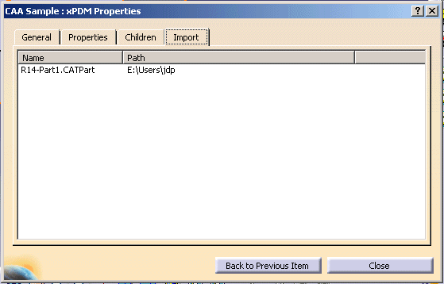

3D PLM PPR Hub Open Gateway |
File XPDM (PX1) |
Creating an Interactive Command to Display PDM Item PropertiesHow to use CATIxPDMItem, CATIxPDMPart and CATIxPDMProductItem |
| Use Case | ||
AbstractThis article shows how to create an interactive command to display all item properties. |
In this use case you will mainly earn how to use all methods of CATIxPDMItem, CATIxPDMProductItem and CATIxPDMPartItem class.
[Top]
CAAxPDMDisplayPropertiesis a use case of the CAAxPDMInterfaces.edu framework
that illustrates CATxPDMInterfaces framework capabilities.
Be careful,
such as all use cases illustrating the CATxPDMInterfaces framework, the current
one requires a PX1 license.
[Top]


 |
By default, properties of current item are displayed (blue node in Product
Structure or current CATPart or CATDrawing).
You can change current item
by:



[Top]
To launch CAAxPDMDisplayProperties, you will need to set up the build time environment, then compile CAAxPDMUICommands with its prerequisites, set up the run time environment, and then execute the use case [1]. To launch it, refer to the What Does CAAxPDMDisplayProperties Do section.
[Top]
The CAAxPDMDisplayProperties use case is made of three files,
| Windows | InstallRootDirectory\CAAxPDMInterfaces.edu\CAAxPDMToolbar.m\ |
| Unix | InstallRootDirectory/CAAxPDMInterfaces.edu/CAAxPDMToolbar.m/ |
This file contains the add-in to create the toolbar.
| Windows | InstallRootDirectory\CAAxPDMInterfaces.edu\CAAxPDMUICommands.m\ |
| Unix | InstallRootDirectory/CAAxPDMInterfaces.edu/CAAxPDMUICommands.m/ |
The first class is the state command launched when the end user push Display Item Properties command. The second one defines the dialog box [Fig.1] launched by the CAAxPDMPropertyCmd command.
where InstallRootDirectory is the directory where the CAA CD-ROM
is installed.
[Top]
[Top]
This sample shows you how to display the properties of a PDM item.
[Top]
| [1] | Building and Launching a CAA V5 Use Case |
| [Top] | |
| Version: 1 [Feb 2006] | Document created |
| [Top] | |
Copyright © 2006, Dassault Systèmes. All rights reserved.